N°01
Cuisine — 海鮮料理
Straight from the Port. テーブルは、お魚でいっぱいに
ご宿泊のご予算に合わせて、旬のお魚を盛りだくさんご用意いたします。
岡山の漁港、牛窓の漁港、時には大将自らの漁で、
なるべく地元のお魚をお召し上がりいただけるよう努めています。
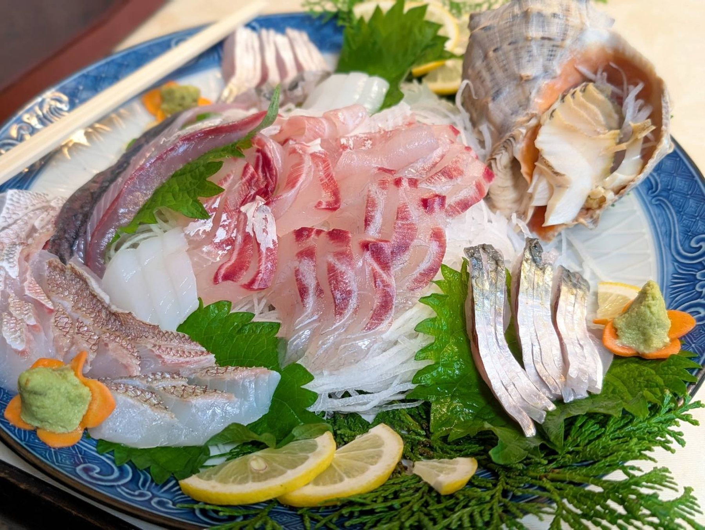
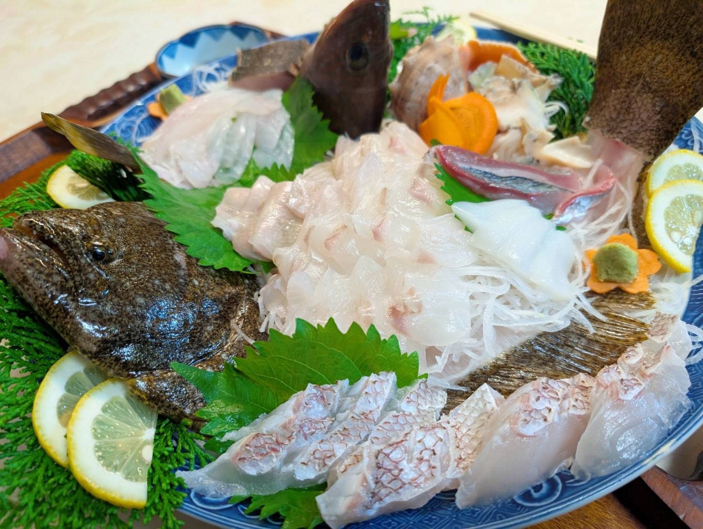


Setouchi Crab
瀬戸内でカニと言えば、ワタリガニ
瀬戸内でカニといえばワタリガニ。
近年は秋ごろに水揚げがあり、
旬の時季には食卓にも並びます。
その他、赤ニシ貝やタコなど
島や海の恵みもあわせてお楽しみください。

Winter Only
冬限定、牡蠣料理
冬の時季限定で、牡蠣のお料理もご用意いたします。
瀬戸内の海で育った、旬の味をお楽しみください。
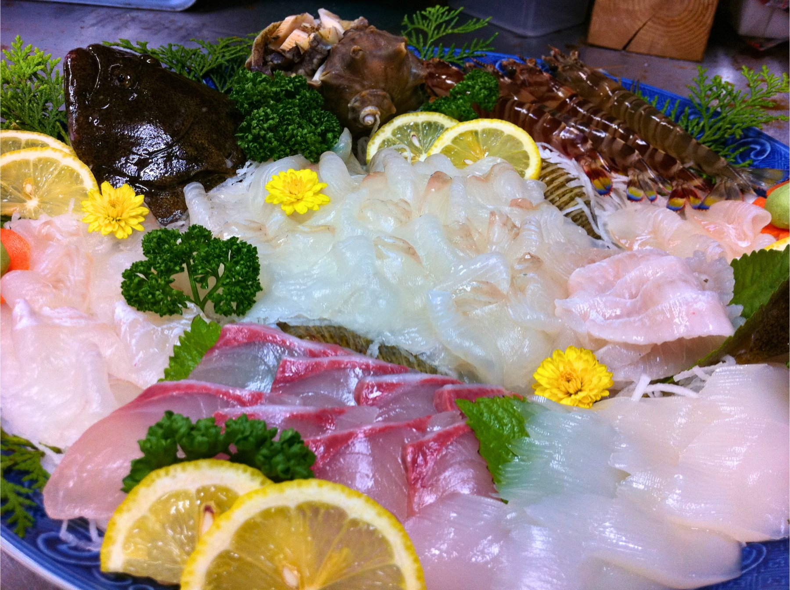
Sugata-zukuri
二名様から、姿造りをご提供
2名様からお魚の姿造りをご用意いたします。
牛窓産のコチをはじめ、その日仕入れたお魚の
姿造りで、食卓を彩ります。
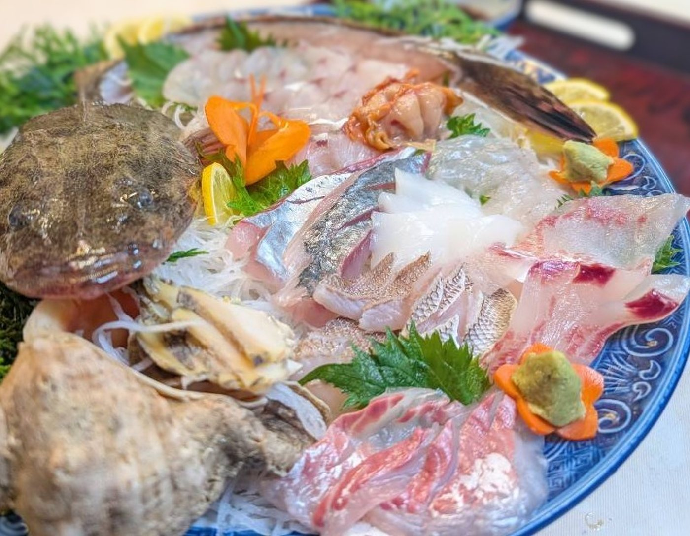
牛窓産コチの姿造りも
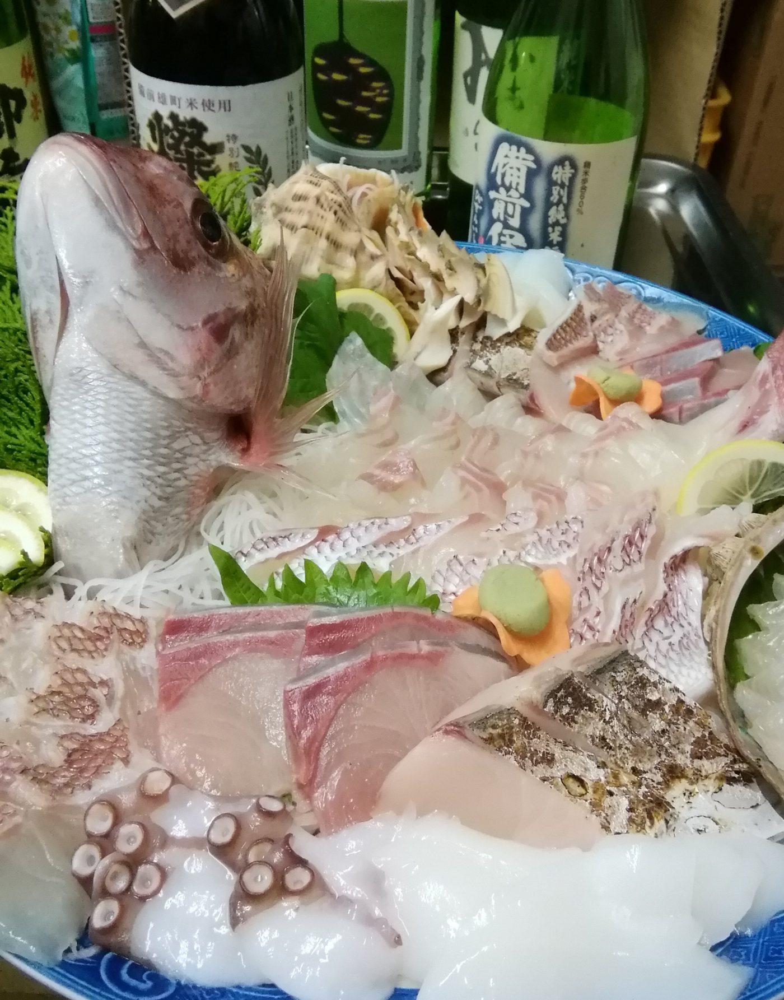
地酒とともに、姿造りを
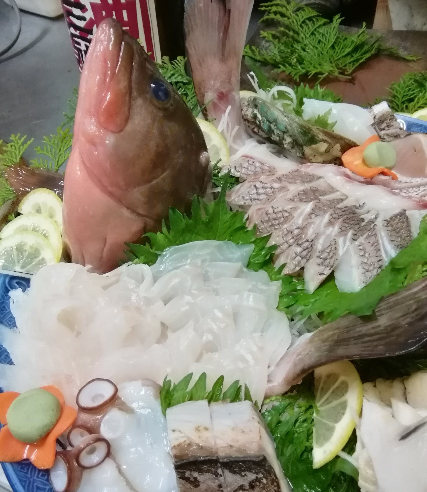
タコや貝も添えて、彩りゆたかに
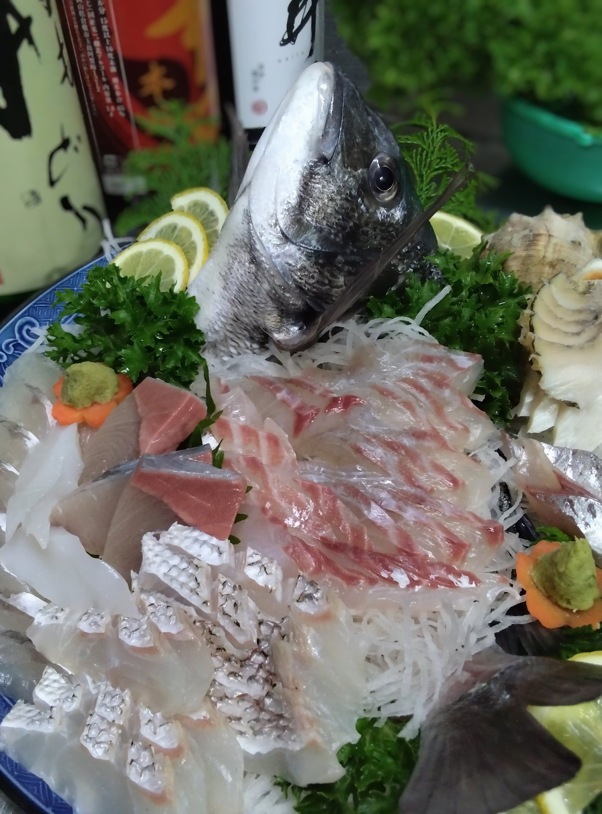
その日いちばんのお魚で
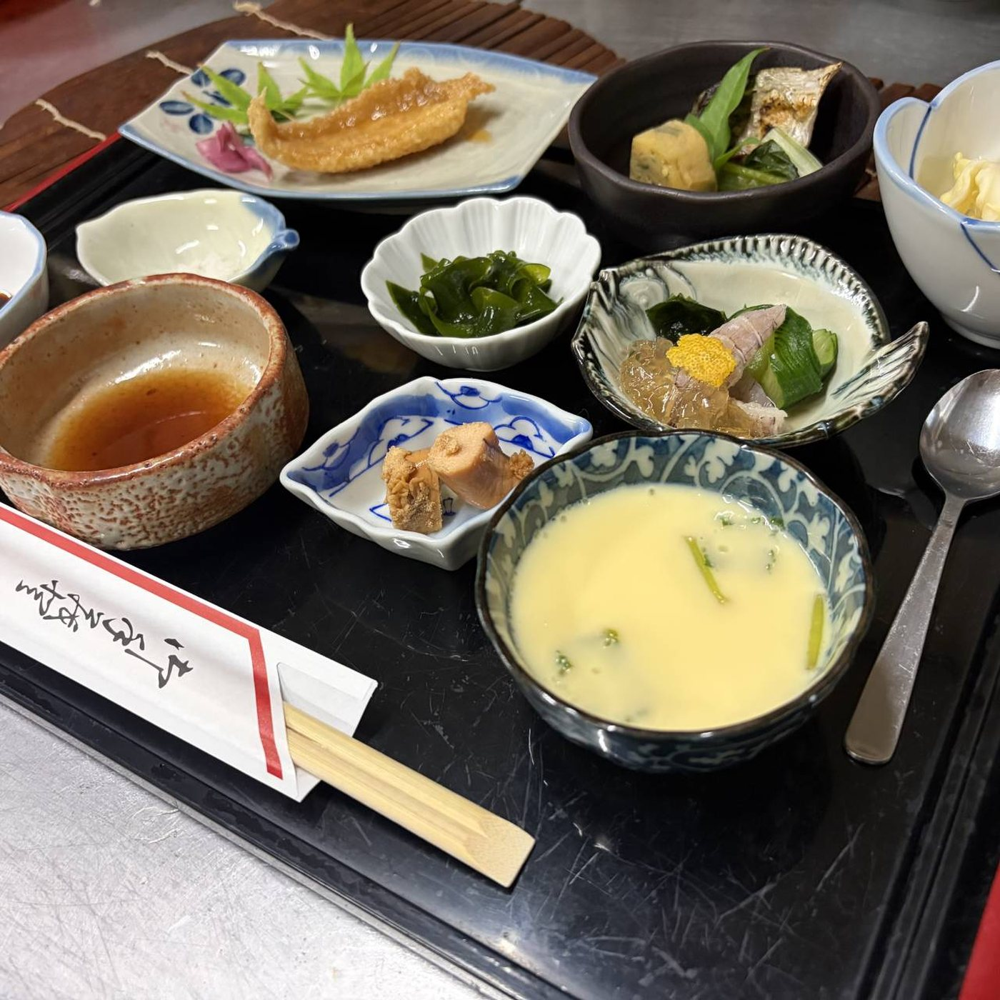
Room Service
お食事は、お部屋へ
お食事は畳のお部屋までお運びします。
海を眺めながら、ご自分たちのペースで
ゆっくりとお召し上がりください。
お弁当のテイクアウトや、ご宿泊なしの
昼・夕食の会食のみのご利用も承ります。
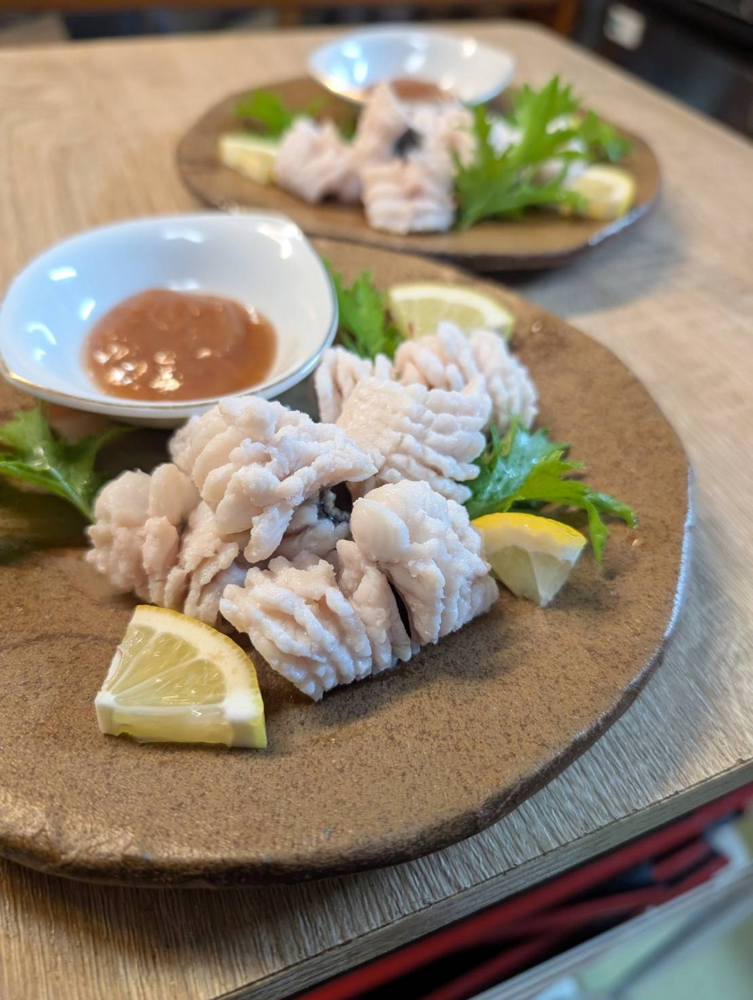
その日の白身魚を、薄造りで
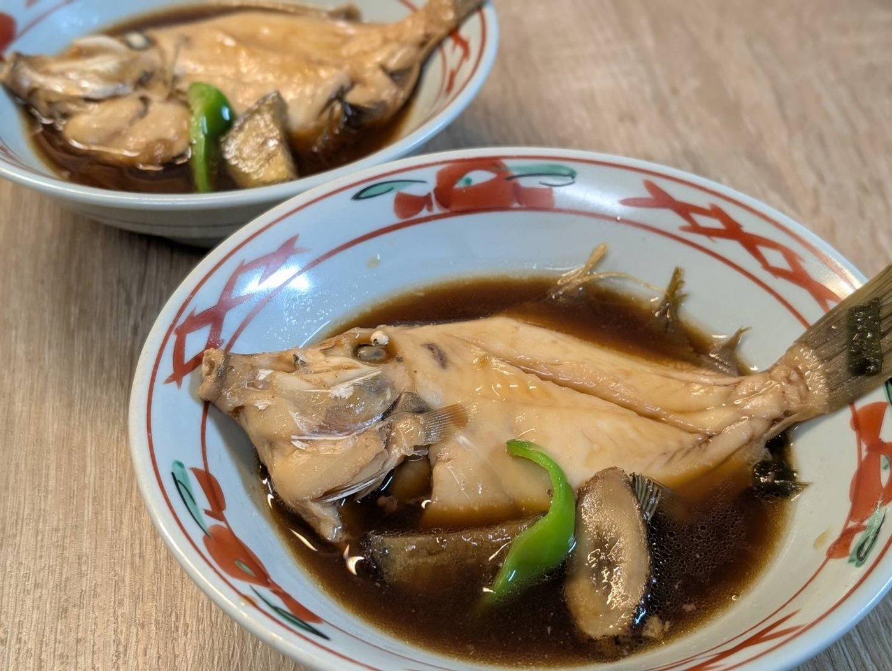
カワハギの煮付け
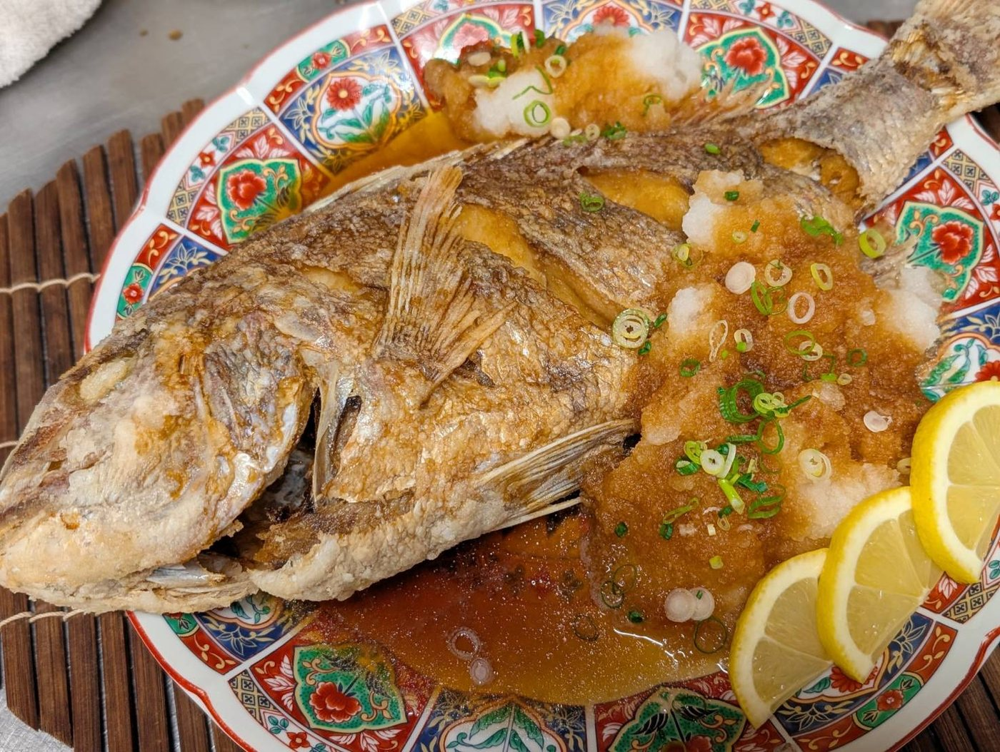
近年人気の、みぞれ揚げ
名物メニュー
秘伝のタレの南蛮漬け
メバルの煮付け
みぞれ揚げ
冬季限定・牡蠣料理
ワタリガニ（秋ごろ）
お飲み物のご案内
ビール・ノンアルコールビール
焼酎・梅酒・チューハイ
地酒「千寿」（高祖酒造）
ジュース各種
・島にはお店が何もございませんので、食後用のお飲み物やおつまみは多少であればお持ち込みいただけます。
・お食事中は宿のお飲み物をご利用ください。お部屋の冷蔵庫は、少量であれば冷蔵品の持ち込みにもご利用いただけます。
・お料理の内容は季節や仕入れにより変わります。アレルギー等ご心配な点がございましたら、ご予約時にお気軽にご相談ください。